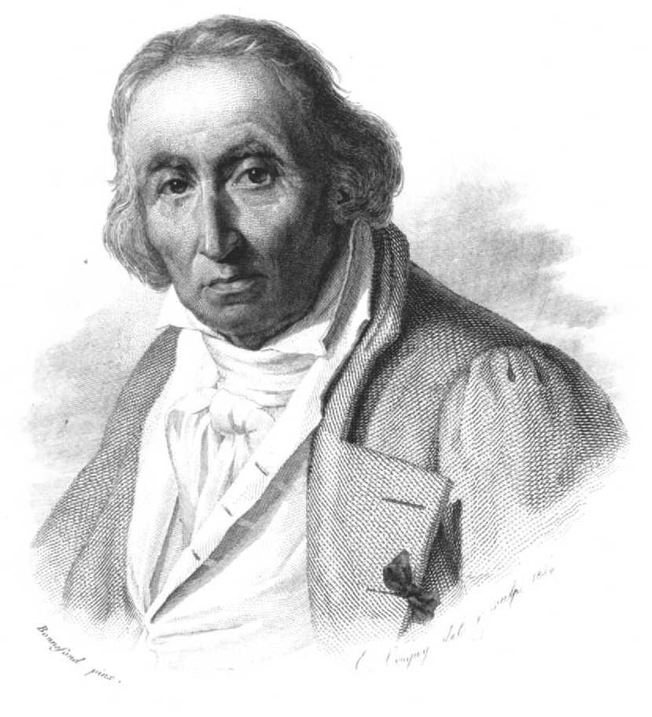

XIX Століття

1801: Жозеф Марі Жаккард, французький купець і винахідник, винайшов ткацький верстат, який використовує перфокартки для автоматичного ткацтва тканин. Ранні комп’ютери використовували подібні перфокарти.

1833: Розпливчастий образ сучасного комп'ютера вперше окреслив у 1833 році британський математик Чарльз Беббідж. Його проект «аналітичної машини» містив усі необхідні елементи сучасного комп’ютера: пристрої введення, накопичувач (пам’ять), млин (обчислювальний блок), блок керування та пристрої виведення. Конструкція передбачала понад 50 000 рухомих частин у паровій машині розміром із локомотив.
XX Століття


ENIAC
Потім більш ніж через століття в історії комп’ютерів ми отримали наш перший електронний комп’ютер загального призначення. Це був ENIAC, що означає Electronic Numerical Integrator and Computer. Винахідниками цього комп'ютера були Джон У. Моклі та Дж. Преспер Екерт.
ENIAC було розроблено для вирішення однієї з складних і нагальних задач того часу — обрахунку балістичних таблиць армії.Побудований на замовлення армії США в Лабораторії балістичних досліджень для обрахунку балістичних таблиць і офіційно введений до ладу 15 лютого 1946 року.
Altair 8800
Altair 8800 по праву вважається першою іскрою, з якої спалахнула пожежа мікрокомп'ютерної революції. Комп'ютерна шина, розроблена для Altair, фактично поставила стандарт цілої галузі. А Altair BASIC, перша мова програмування для цієї машини, була розроблена відомою компанією Micro-Soft (тоді її назва ще писалася через дефіс).
Apple
Компанія Apple – один з піонерів індустрії, яка стала першопрохідником у багатьох областях: перші по-справжньому персональні комп'ютери, перші багатокольорові дисплеї на ПК, перші операційні системи з графічним інтерфейсом, перші комп'ютери з підтримкою мишки, перший персональний аудіоплеєр, перший інтернет-магазин музики. Список інновацій корпорації Apple можна продовжувати дуже довго.
Але, справжнім проривом для свого часу став Apple II.Мало того, комп'ютер був здатний на відтворення кольорового зображення, звуку і мав вбудовану мову програмування Basic. Комп'ютер можна було підключати до будь-якого кольорового телевізора завдяки вбудованій підтримці PAL/NTSC.

Супер комп’ютер сучасності


Fugaku — суперкомп'ютер, який встановлюється в Центрі обчислювальної науки RIKEN у Кобе, Японія . Розробка розпочалась у 2014 році, і його планується поставити до роботи в 2021 році, хоча частини комп'ютера були введені в експлуатацію в червні 2020 року
Fugaku використовує 158 976 процесорів A64FX, об'єднаних разом. Операційна система використовує як Linux, і легкий McKernel і вони здатні працювати одночасно і пліч о пліч.Остаточний показник продуктивності Fugaku — це Rpeak 0,54 exaFLOPS у FP64, використовуваний в TOP500.
Однак, при роботі з числами меншої точності, які зазвичай використовують в задачах зі штучним інтелектом, HPL-AI, Fugaku сягає продуктивності понад 2 exaFLOPS.
У червні 2020 року Фугаку став найшвидшим суперкомп'ютером у світі в списку TOP500, витіснивши IBM Summit.